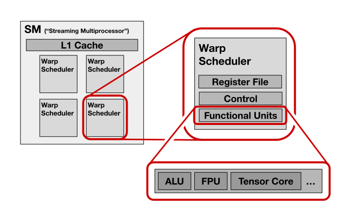

Lab 6: Matrix Multiply – Tensor Cores
Prologue: Logistics
Due Dates
For this lab, you’ll be turning in the following deliverables:
-
Checkpoint: Due Tuesday, October 14, 11:59pm. For this checkpoint, submit your responses to the prelab (Part 0), and tell us how you’re doing in optimizing your implementation for the main lab.
-
Final Submission: Due Friday, October 17, 11:59pm. Submit your completed code for
matmul_3.cu, as well as a write-up containing your answers to Questions 1 - 2.
Starter Code
You can get the starter code for this lab by cloning the lab repository:
Introduction
Goals for This Lab
So far in our exploration of matrix multiplication, we’ve focused primarily on optimizing data movement (Lab 4) and work partitioning (Lab 5). As we’ve worked to reduce bottlenecks along those dimensions, the run times of our implementations have increasingly become dominated by the cost of the floating point computations in our kernels’ innermost loops. Up until now, we’ve been implementing those core floating point computations using fused multiply-add (FMA) instructions. However, we can do better: modern NVIDIA GPUs support so-called “tensor core” instructions, which are designed specifically to accelerate matrix multiplication workloads. In this third and final matrix multiplication lab, we’ll be looking at how to use those tensor core instructions to speed up our kernels.
The tensor core instructions we’ll be using in this lab aren’t exposed by default in the CUDA C++ language, so we’ll be accessing them via inline PTX assembly, as you’ve done before in this class.1
-
In the prelab, we’ll look at how to access tensor core instructions in PTX, and how to work with the data layouts those tensor core instructions expect.
-
Then, we’ll integrate tensor core instructions into our full matrix multiplication kernel, and try to obtain a speedup over what were able to achieve using FMAs.
Note on Terminology: What is a “Tensor Core?”
Although the phrase “tensor core” might conjure up mental images of something similar to a “CPU core” – perhaps something with its own register file and program counter, decoding and executing a programmable stream of instructions in sequence – a tensor core is not actually that kind of “core” in the traditional computer architecture sense.
The phrase “tensor core” is just NVIDIA’s name for a particular kind of functional unit which exists on recent generations of NVIDIA GPUs. Tensor cores are not fundamentally different from ALUs or FPUs – each tensor core is attached to a warp scheduler, and solely executes math operations.

From a software point of view, tensor cores simply provide another kind of math instruction which your code is able to invoke. As we’ll see, these tensor core instructions have some interesting and unusual properties, but their existence doesn’t radically alter anything about the CUDA programming model.
Part 0: Prelab – Invoking Tensor Core Instructions
First, let’s start by using our background in inline PTX to use it to interact with the tensor cores on our GPU!
The RTX 4000 Ada GPU we’re using belongs to NVIDIA’s Ada Lovelace generation (specifically, “Compute Capability 8.9”). On Ada, there are tensor core instructions available in four different floating-point flavors:
-
f16– The 16-bit floating point format defined by the IEEE 754 standard, with 5 exponent bits and 10 mantissa bits. -
bf16– “Brain float 16,” with 8 exponent bits and 7 mantissa bits. Popular in deep learning. -
tf32– “TensorFloat-32,” which is basically ordinary 32-bit floating point, but with compromises made in the accuracy of the multiplications performed by the tensor core. The mantissa of each input value is implicitly truncated to 10 bits (down from the ordinary 23) before participating in the multiplication. -
e4m3,e5m2– 8-bit floating point, which is configurable to either use 4 or 5 exponent bits (e4m3vs.e5m2), which was added in the Hopper/Ada generations.
Additionally, for all four of these formats, tensor cores support accumulating results in full 32-bit precision, effectively casting the results of the tensor core’s lower-precision multiplications up to FP32 before adding them together or to an existing partial sum.
Because the kernels we developed in Lab 4 and Lab 5 work in 32-bit precision, we’ll be focusing on TF32 precision in this lab for the sake of compatibility with our existing code. Given that TF32 tensor core instructions perform multiplications in lower precision than the FP32 FMAs we’ve been using until now, we can expect to see some unavoidable accuracy loss when we adapt our kernel to use tensor cores.
So – what kind of TF32-precision tensor core functionality do we actually have on our 4000 Ada GPU? The answer is simple – we have exactly two instructions:2
mma.sync.aligned.m16n8k4.row.col.f32.tf32.tf32.f32(HMMA.1684.F32.TF32in SASS)mma.sync.aligned.m16n8k8.row.col.f32.tf32.tf32.f32(HMMA.1688.F32.TF32in SASS)
(You can find the PTX documentation for these instructions here: MMA PTX docs.)
Both of these instructions are “matrix-multiply-accumulate” (MMA) instructions; conceptually, they each implement an operation like:
where , , , and are matrices. The two instructions differ only in the dimensions of the matrices they operate on:
| Instruction Dimensions | Dimensions | Dimensions | , Dimensions |
|---|---|---|---|
m16n8k4 | 16 * 4 | 4 * 8 | 16 * 8 |
m16n8k8 | 16 * 8 | 8 * 8 | 16 * 8 |
Empirically, the course staff have observed that these instructions are equivalent in terms of FLOP throughput; the m16n8k4 variant performs half as much work per instruction as m16n8k8, but twice as many m16n8k4 instructions can execute per cycle on average as m16n8k8.
In this part of the lab, we’ll look at how we can use the m16n8k8 TF32 MMA instruction to execute a single 16 * 8 * 8 matrix multiplication. As we’ll see, this isn’t actually trivial – in particular, it will require understanding the unusual way in which tensor core instructions expect their operands to be laid out in registers.
Warp-Level Semantics
To understand how the mma.sync.aligned.m16n8k8.row.col.f32.tf32.tf32.f32 instruction works, the most important fact to establish is that tensor core instructions fundamentally operate at the warp level.
As we saw in Labs 1 and 2, the GPU’s hardware always executes instructions in a 32-wide SIMD fashion, with every 32 consecutive CUDA threads grouped together as 32 lanes of a vector. Viewing the GPU as a SIMD machine, virtually all the instructions we’ve seen our GPU execute so far in this course have been element-wise vector operations, with each instruction applying an identical, independent operation in each lane (modulo masking). When every instruction we execute is element-wise, we can often get away with ignoring the fact that the GPU is a SIMD machine at all, and simply pretend like every CUDA thread its executing its own independent stream of instructions. However, tensor core instructions break this illusion, because they are not element-wise.3
When a warp executes a tensor core operation like our m16n8k8 instruction, it is not executing a separate, independent matrix multiplication for each CUDA thread in the warp; rather, it is executing a single 16 * 8 * 8 matrix multiplication cooperatively across the entire warp, with the input and output data for the instruction distributed across the registers of all the CUDA threads in the warp. When thinking about tensor core instructions, it’s most helpful to think of each “register” in your program as a 32-word-wide vector register, rather than as a single scalar register per CUDA thread.
With all of that in mind, let’s take a look at how the m16n8k8 instruction we’re using actually expects data to be laid out in registers. First, a bit of math:
- The matrix is
16 * 8words, so we need16 * 8 / 32 = 4registers to store it. - The matrix is
8 * 8words, so we need8 * 8 / 32 = 2registers to store it. - The / matrix is
16 * 8words, so we need16 * 8 / 32 = 4registers to store it.
Accordingly, the PTX syntax for invoking our tensor core instruction looks like this:
mma.sync.aligned.m16n8k8.row.col.f32.tf32.tf32.f32
, /* 'D' matrix */
, /* 'A' matrix */
, /* 'B' matrix */
; /* 'C' matrix */
(PTX syntax supports /* ... */ comments.)
From the perspective of each CUDA thread, each of these %0, %1, etc operands is a 1-word scalar register. Collectively across the entire warp, each operand is a 32-word vector register.
How does the m16n8k8 instruction expect data to be packed into these registers? We present the layouts below.
{kind=link}
{kind=link}
{kind=link}
(These diagrams are courtesy of Claude 3.5 Sonnet. You can click any image to expand it. You can also access interactive versions of these diagrams here:
(The PTX documentation also contains its own versions of these diagrams.)
Essentially:
-
The ‘A’ matrix is split into 4 quadrants. Each quadrant is mapped to a separate register, first top-to-bottom then left-to-right. Within each quadrant, the data is laid out in the corresponding register in row-major order.
-
The ‘B’ matrix is split vertically into 2 halves. Each half is mapped to a separate register, first top then bottom. Within each half, the data is laid out in the corresponding register in column-major order.
-
The ‘C’ matrix (and ‘D’ matrix) is split vertically into 2 halves, and each half is sliced into alternating vertical stripes, with all the even stripes grouped together and all the odd stripes grouped together. Each stripe-set in each half is mapped to a separate register. Within each stripe-set, the data is laid out in the corresponding register in row-major order.
Recall that for the ‘A’ matrix, the “vertical” and “horizontal” dimensions correspond to the i and k indices in the matrix multiply computation, whereas for ‘B’ they correspond to the k and j indices, and for ‘C’ they correspond to i and j.
A Note on Register Types
You now have almost everything you need in order to invoke the mma.sync.aligned.m16n8k8.row.col.f32.tf32.tf32.f32 instruction to perform a 16 * 8 * 8 matrix-multiply-accumulate. There is, however, one remaining quirk of the PTX interface to be aware of: this PTX instruction expects every operand to be a 32-bit integer register. Of course, the bits these integer values carry will actually encode 32-bit floating-point data, but it expects them to be integer registers nonetheless. To cope with this, you can use the built-in __float_as_uint and __uint_as_float functions to reinterpret the bits of a float as a uint32_t, and vice-versa. (These conversion functions are purely a compile-time formality and should ultimately have zero cost at run time.)
Implementation
Deliverable: In the file
exercise_mma.cu, implement the functionmma_16x8x8_kernelto perform a single16 * 8 * 8matrix multiplication on the matrices stored inaandb, and accumulate the results of that matrix multiplication intoc, using the tensor core instructionmma.sync.aligned.m16n8k8.row.col.f32.tf32.tf32.f32. In addition to invoking this tensor core instruction, your kernel can use whatever additional CUDA logic you like to compute indices, move data around, etc. The data ina,b, andcis stored in row-major layout in global memory. Note that the kernelmma_16x8x8_kernelwill be launched with exactly 32 CUDA threads (one warp).
Prelab Question: Look at the assembly code generated for your
exercise_mma.cufile. What does the generated SASS look like? Can you find the tensor core instruction? Paste the relevant chunk of SASS in your answer.
Part 3: Accelerating Matrix Multiply
Now that we’ve seen how to invoke tensor core instructions on our GPU, we’re ready to integrate them into our full matrix multiply kernel!
For this lab, we’ll be focusing on just a subset of the problem sizes from Lab 5. Here they are:
size_i | size_j | size_k |
|---|---|---|
3072 | 3072 | 3072 |
2048 | 3072 | 3072 |
1024 | 3072 | 3072 |
512 | 3072 | 3072 |
256 | 3072 | 3072 |
128 | 3072 | 3072 |
64 | 3072 | 3072 |
32 | 3072 | 3072 |
16 | 3072 | 3072 |
Analysis
To understand the maximum performance we can achieve with our tensor core implementation on each of these problem sizes, we can repeat a similar analysis to the one we carried out for the previous lab. For this analysis, you can assume that the theoretical peak TF32 tensor core throughput on our 4000 Ada GPU is given by:
(128 FLOP / tensor core / cycle)
* (4 tensor cores / SM)
* (48 SMs)
* (2.175 GHz)
= 53.45 TFLOP/s
Question 1 for final write-up: For each of the problem sizes in this lab, walk through the following analysis (you may find it helpful to reuse some of your calculations from Lab 5 Question 2):
Considering the total number of FLOPs required to process this problem size, what is the fastest we could process this problem size if tensor core throughput were the only constraint?
Considering (1) as well as the minimum time required to access each unique matrix element in DRAM, what lower bound does this imply for the run time of our algorithm? Is this workload compute-bound or bandwidth-bound?
Considering (2), what is the maximum TFLOP/s we could achieve on this problem size? (This is just (2) divided by the total FLOPs.)
How does (3) compare to the maximum throughput achievable if we were to use FMAs rather than tensor cores (as we calculated in Lab 5 Question 2.6)? Is the workload constrained by the same resource (either compute or bandwidth) in both cases, or is one scenario compute-bound while the other is bandwidth-bound?
Implementation
Our goal for the final part of this lab will be to write a matrix multiply kernel which uses tensor cores to run faster than any FMA-based matrix multiply realistically could on our largest problem sizes.
To calibrate our expectations for how fast an FMA-based kernel could realistically run, we’ve measured the performance of NVIDIA’s highly-optimized cuBLAS library on each problem size when running without tensor cores:4
cuBLAS Performance Without Tensor Cores:
size_i | size_j | size_k | Time (ms) | Throughput (TFLOP/s) |
|---|---|---|---|---|
3072 | 3072 | 3072 | 3.152 | 18.396 |
2048 | 3072 | 3072 | 2.174 | 17.781 |
1024 | 3072 | 3072 | 1.090 | 17.726 |
512 | 3072 | 3072 | 0.559 | 17.295 |
256 | 3072 | 3072 | 0.356 | 13.566 |
128 | 3072 | 3072 | 0.256 | 9.437 |
64 | 3072 | 3072 | 0.194 | 6.243 |
32 | 3072 | 3072 | 0.181 | 3.332 |
16 | 3072 | 3072 | 0.181 | 1.666 |
Our goal will be to write an implementation which beats these non-tensor-core cuBLAS numbers on the following problem sizes:
3072 * 3072 * 30722048 * 3072 * 30721024 * 3072 * 3072512 * 3072 * 3072256 * 3072 * 3072128 * 3072 * 3072
For the other problem sizes, your implementation should be correct, but it’s okay if it achieves worse performance than cuBLAS.
Deliverable: In the file
matmul_3.cu, implement the functionlaunch_matmul_tensor, and any associated kernels, so that whensize_iis3072,2048,1024,512,256, or128, it achieves a higher throughput than our FMA-based cuBLAS baseline. To do this, you will (almost certainly) need to use tensor cores.
To hit this performance target, you don’t need any techniques other than what we’ve already discussed in Lab 4, Lab 5, and this lab. All the suggestions from the previous labs continue to apply; a few especially important ones which you may find it helpful to keep in mind are:
-
Avoid register spills, by not exceeding the register file capacity and by not accessing arrays using dynamic indices.
-
Use microtiles for register-level reuse. This is still relevant when using tensor cores! (But how should you structure the microtiles now?)
-
Overlap data movement with computation, using e.g. asynchronous copy instructions.
-
Avoid many-way bank conflicts, either by adjusting your data layouts or by adjusting your access patterns.
Good luck! Once you’ve implemented your optimized kernel, you can answer the final question of the lab:
Question 2 for final write-up: How does the performance of your implementation compare to the cuBLAS FMA baseline for each problem size? What fraction of theoretical peak throughput (calculated in Question 3.3) were you able to achieve for each problem size? What did you need to change about your kernel design in order to make use of tensor core instructions? What RRMSE numbers do you observe for your implementation, and how do they compare to the RRMSE numbers for your non-tensor-core implementation from Lab 5? Did you encounter any interesting bugs along the way? Finally, optionally: do you have any ideas for how it might be possible to develop an implementation which runs even faster?
Congratulations – you’ve reached the end of the matrix multiplication labs for 6.S894! We hope you’ve had as much fun working through them as we’ve had creating them.
You’re now well on your way to being able to implement the kinds of high-performance matrix multiplication kernels which power the world’s most computationally demanding deep learning applications, as well as important applications in many other domains.
Further Reading
If you want to learn more about matrix multiplication, there are a huge number of additional topics you may find it interesting to look into, including:
-
Reduced precisions:
-
The tensor cores on our GPU support 16-bit floating point (PTX docs), 8-bit integer (PTX docs), 8-bit floating point (PTX docs) and 4-bit integer (PTX docs) precisions. Handling these precisions efficiently poses new and interesting challenges, like needing to pack multiple values into each 32-bit word (CUDA docs).
-
NVIDIA’s newest Blackwell GPUs support exotic formats like 4-bit floating point and 6-bit (!) floating point (link).
-
-
Fused and variant kernels:
- It’s very common for high-performance machine learning applications to employ kernels which implement matrix multiplication combined with some other operation. This can look like applying an element-wise operation or a reduction on the final output of a matrix multiplication before writing it back to DRAM (relevant paper), but it also includes even more complicated kernel designs like FlashAttention (link, and state-of-the art version) which embed matrix-multiply-like computations inside other kinds of workloads. An interesting recent example is FLUX (link), which combines matrix multiplication with cross-GPU communication.
-
Higher-level tools:
- In this lab we’ve been programming the GPU at a very low level of abstraction, but it’s also possible, and often preferable, to write matrix multiplications using higher-level CUDA libraries like CUTLASS (link), or domain-specific languages like Triton (link). Many of the performance optimizations used in the implementations of those tools are techniques that you now know how to implement by hand!
-
Improved scheduling and partitioning:
- NVIDIA’s best-performing matrix multiply kernels use techniques slightly more advanced than (but very similar to!) the ideas we’ve discussed in these past three labs. Some of the key differences from the designs we’ve covered include overlapping data movement with computation using software pipelines with more than two stages (i.e. staging data into a ring buffer rather than double-buffering it) (link), and using partitioning strategies which achieve better load-balancing than split-k, such as “stream-k” (link).
-
Newer GPUs:
- NVIDIA’s Hopper generation of GPUs includes several new features which are relevant when writing matrix multiply kernels. Notably, these include an evolved version of asynchronous copy instructions using something called the “tensor memory accelerator” (TMA) (link), as well as new extremely high-throughput tensor core instructions which run asynchronously, can load their inputs directly from shared memory, and work at a granularity of four warps at a time (PTX docs). Even though these features are different than the ones we’ve covered in this course, we hope you feel that you’re now very well-prepared to figure out how to use them (we think you are!).
-
Alternative platforms:
- Because deep learning is such an active space, there’s now a veritable zoo of different hardware accelerator platforms all designed to multiply matrices. Spanning various levels of readiness, performance, and public availability, these include: Google’s TPUs, AMD’s GPUs, Apple’s M-series chips, Intel’s Gaudi, Graphcore’s IPUs, Amazon’s Trainium, Tenstorrent’s various accelerators, Cerebras’s Wafer-Scale Engine, Groq’s TSPs, the chips in Tesla’s Dojo supercomputer, Etched’s Sohu, SambaNova’s RDU, Microsoft’s MAIA, and Meta’s MTIA – and we’re sure we forgot some! You may get a chance to program some of these in the future – and although they’re not NVIDIA GPUs, many of the fundamental ideas we’ve covered should be relevant as you learn to program any of them!
In a few weeks, we’ll start discussing ideas for final projects or the final labs (whichever you’re interested in). If any of the matrix-multiplication-related topics above sound interesting to you, keep them in mind when you’re thinking about what you might want to work on for your final project, and keep all these ideas in mind for the optional final labs!
NVIDIA has developed an external library called “CUTLASS” which provides a higher-level C++ interface for interacting with tensor cores. However, CUTLASS is built on top of many layers of complicated C++ template metaprogramming machinery, and in the course staff’s experience, accessing tensor cores directly via PTX provides better clarity about what’s actually going on. Libraries like CUTLASS can be convenient in practice, but they’re never necessary; anything you can do using CUTLASS, you can also do yourself using inline PTX.
In practice, thanks to compiler optimizations in the PTX-to-SASS translation step, if you write CUDA code which implements three-way bit-wise operations in terms of normal two-way bit-wise operators like (a & b) | c, the compiler will sometimes end up generating fast LOP3 instructions for you at the SASS level anyway. However, explicitly invoking the lop3 instruction via inline PTX provides more control.
In PTX there is also an API called wmma, which superficially appears to offer yet another way to use the machine’s tensor cores. However, inspecting the SASS generated for wmma.mma instructions reveals that, on our GPU, it ultimately compiles to the same HMMA instructions which are already exposed through the mma API we’re using for this lab. As far as we can tell, this alternate wmma API exists mostly for historical reasons.
Tensor core instructions aren’t the only instructions on the GPU with warp-level semantics; there are also warp-level reductions and warp-level permutations, among others. This blog post has some interesting commentary on such warp-level functions and their history.
We make sure the cuBLAS kernels we’re calling won’t use tensor cores by explicitly requesting matrix multiplies in full FP32 precision as opposed to TF32 precision.